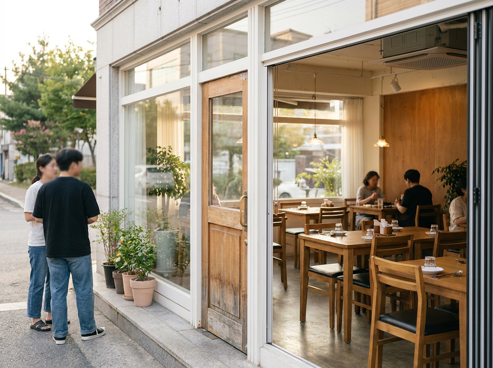
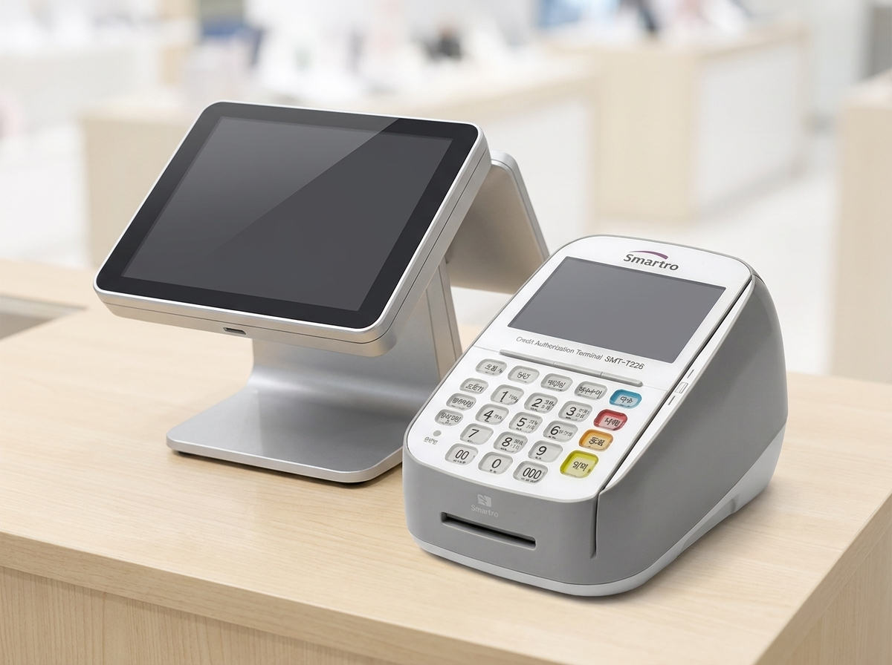

네이버 플레이스, 사장님이 직접 30분만 챙기면 매장이 검색에 뜹니다
우리 매장이 네이버 지도와 검색에 잘 안 보인다면, 대부분은 광고비 문제가 아니라 스마트플레이스 정보가 비어 있어서입니다. 스마트플레이스는 네이버가 사장님에게 무료로 제공하는 매장 관리 도구입니다. 업체 등록을 하고, 영업시간·메뉴·사진·소식을 꾸준히 채우기만 해도 손님이 우리 매장을 찾을 확률이 확실히 올라갑니다. 대행사에 맡기기 전에, 사장님이 직접 챙길 수 있는 기본기부터 정리해 드립니다.

스마트플레이스가 뭐고 왜 직접 해야 하나요
스마트플레이스(smartplace.naver.com)는 네이버 지도·검색에 노출되는 우리 매장 정보를 사장님이 직접 등록하고 관리하는 무료 서비스입니다. 손님이 "○○동 국밥"처럼 지역과 업종을 검색하면 결과에 뜨는 그 매장 카드가 바로 스마트플레이스에서 나옵니다.
여기서 오해를 하나 짚고 갑니다. 스마트플레이스에 정보를 아무리 잘 채워도 검색 순위를 보장받는 것은 아닙니다. 노출 순서는 네이버 알고리즘이 거리, 방문자 반응, 정보 충실도 등 여러 요소를 종합해 결정하며 수시로 바뀝니다. 그래서 "상위노출 보장"을 내세우는 업체는 걸러야 합니다. 사장님이 할 일은 순위를 사는 게 아니라, 우리 매장 정보를 정확하고 풍부하게 채워 손님이 찾았을 때 신뢰를 주는 것입니다. 그 기본기는 사장님이 직접 하는 게 가장 빠르고 정확합니다.
등록 전 준비물과 첫 등록 순서
처음 등록은 30분이면 끝납니다. 미리 준비물만 챙겨 두면 막힘이 없습니다.
| 항목 | 등록 전(비어 있을 때) | 등록 후(제대로 채웠을 때) |
|---|---|---|
| 상호·주소 | 검색에 아예 안 뜨거나 옛 정보 | 정확한 위치로 지도 노출 |
| 영업시간 | 손님이 헛걸음, 전화 문의 폭주 | 실시간 영업중 표시로 방문 유도 |
| 대표 사진 | 외관을 몰라 지나침 | 첫인상으로 클릭 유도 |
| 메뉴·가격 | "얼마예요?" 문의 반복 | 미리 보고 결정 후 방문 |
| 소식·리뷰 | 살아있는 가게인지 불안 | 최근 활동으로 신뢰 상승 |
첫 등록 순서는 이렇습니다. 첫째, 네이버 아이디로 스마트플레이스에 접속해 "신규 등록"을 누릅니다. 둘째, 상호·주소·업종·전화번호를 입력합니다. 셋째, 사업자등록증 등으로 업체 소유주 인증을 진행합니다. 넷째, 인증이 승인되면 영업시간과 메뉴, 사진을 채웁니다. 인증 방식과 필요 서류는 업종에 따라 다를 수 있으니 최신 내용은 네이버 스마트플레이스 공식 안내를 확인하세요.

정보·사진 채우기, 이것만은 꼭
정보는 "손님이 방문 전에 궁금해할 것"을 기준으로 채웁니다.
- 영업시간과 휴무일은 반드시 정확하게. 명절·임시휴무는 그때그때 반영해야 헛걸음을 막습니다.
- 대표 사진은 밝고 선명하게. 외관, 내부, 대표 메뉴 세 종류는 기본으로 넣습니다. 어두운 사진 한 장보다 밝은 사진 여러 장이 낫습니다.
- 메뉴와 가격을 최신으로. 가격을 올렸다면 바로 수정해 현장 불만을 줄입니다.
- 편의정보(주차, 포장, 배달, 예약, 반려동물 동반 등)를 빠짐없이 체크합니다. 손님은 이 조건으로 매장을 거르기 때문입니다.
- 전화번호와 결제 수단 표기를 정확히. 애플페이·삼성페이·제로페이 등 우리 매장에서 되는 간편결제를 적어 두면 젊은 손님의 방문 결정에 도움이 됩니다.
리뷰와 소식으로 살아있는 매장 만들기
정보를 채웠으면, 이제는 "관리되고 있는 가게"라는 인상을 주는 단계입니다.
리뷰는 손님이 남기는 것이지만 사장님의 몫도 있습니다. 방문 후기에 정중하게 답글을 달면 다른 손님이 볼 때 신뢰가 올라갑니다. 좋은 후기에는 감사를, 아쉬운 후기에는 사과와 개선 약속을 남기는 게 정석입니다. 대가를 주고 후기를 사는 행위는 네이버 정책 위반이니 절대 하지 마세요.
소식(공지) 기능은 무료 홍보 게시판입니다. 신메뉴, 이벤트, 임시휴무, 계절 상품을 사진과 함께 올리면 검색 결과 카드가 풍성해지고 단골에게도 알림이 됩니다. 일주일에 한 번이라도 꾸준히 올리는 매장이 결국 손님 눈에 더 자주 띕니다.
한 가지 팁을 더하면, 포스에 쌓인 매출 데이터가 이 관리에 도움이 됩니다. 어떤 메뉴가 몇 시에 잘 나가는지 포스로 보면, 소식에 무엇을 언제 올릴지, 대표 사진에 어떤 메뉴를 앞세울지 판단이 빨라집니다. 감이 아니라 데이터로 매장을 챙기는 셈입니다.
자주 묻는 질문
Q. 등록비나 사용료가 드나요?
스마트플레이스 등록과 기본 정보 관리는 무료입니다. 별도 광고 상품은 유료지만, 이번 편에서 다룬 기본기는 비용 없이 사장님이 직접 할 수 있습니다.
Q. 정보를 잘 채우면 무조건 위에 뜨나요?
아닙니다. 노출 순서는 네이버 알고리즘이 결정하며 보장되지 않습니다. 다만 정보가 정확하고 풍부할수록 손님이 찾았을 때 선택될 가능성이 높아집니다. "상위노출 보장" 광고는 신뢰하지 마세요.
Q. 사진은 몇 장이나 올려야 하나요?
정해진 정답은 없지만, 외관·내부·대표 메뉴를 포함해 여러 장을 올리는 게 좋습니다. 오래된 사진은 주기적으로 교체하세요.
Q. 결제 단말기나 포스도 스마트플레이스에서 관리되나요?
아닙니다. 스마트플레이스는 매장 노출 관리 도구이고, 결제·포스 구성은 별개입니다. 다만 포스 매출 데이터가 매장 관리 판단에 도움이 되므로 함께 챙기면 좋습니다.
결제·포스 구성은 누리네트웍스가 함께합니다
매장 노출은 사장님이 직접 챙기시고, 손님이 방문했을 때의 결제 경험은 누리네트웍스가 도와드립니다. 누리네트웍스는 14년간 3만여 매장에 포스와 결제 단말을 공급해 온 수도권 직접설치 업체입니다. 포스·테이블오더·키오스크·카드단말기 구성부터 애플페이·삼성페이·간편결제 세팅까지, 우리 매장에 맞는 결제 환경을 상담해 드립니다. 가격과 구성은 매장 상황에 따라 달라지니 상담 시 안내해 드립니다.
- 📞 전화상담 1544-7754
- 🌐 홈페이지 nwpos.co.kr


이미지1: 스마트플레이스에 등록된 매장 카드가 네이버 지도와 검색에 노출되는 예시
이미지2: 영업시간·메뉴·사진을 채운 스마트플레이스 관리 화면
이미지3: 손님이 매장을 방문해 유선카드단말기로 간편하게 결제하는 모습